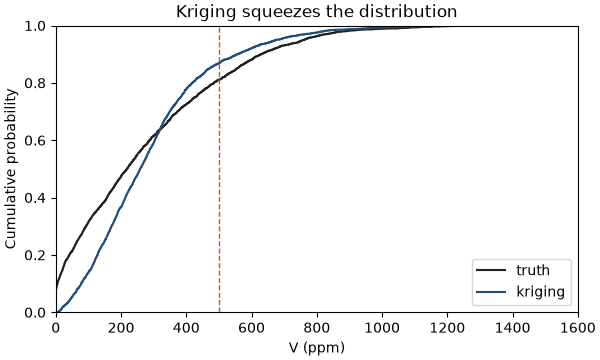
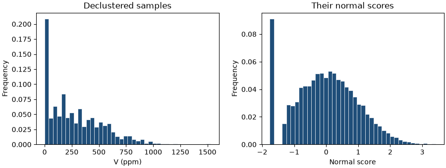
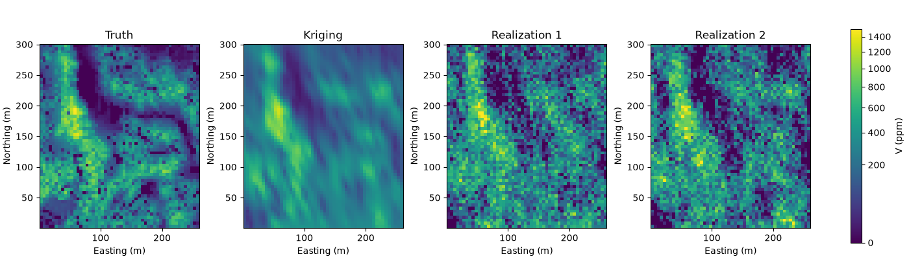
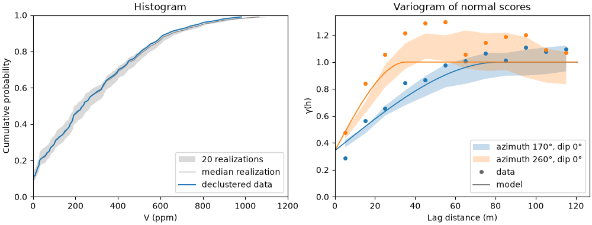
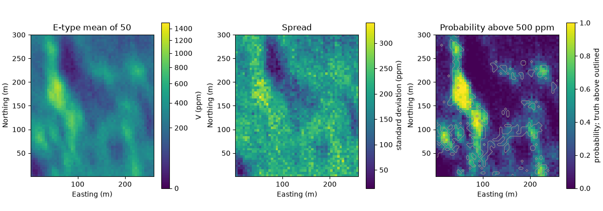

Note
Click here to download the full example code
Simulation¶
- 1. Samples and support
- 2. Describing data
- 3. Spatial continuity
- 4. Kriging
- 5. Simulation
- 6. Checking a model
Kriging gives the best guess at every node, and the best guess is smooth. Questions about extremes, such as how much ground lies above a cutoff, need maps that vary as much as the real deposit. Simulation draws many such maps, each consistent with the samples, and you read the uncertainty from their differences.
What you'll learn
- Why a kriged map understates the highs, the lows and the area above a cutoff.
- What a realization is, and why you need many of them.
- How the normal-score transform and its inverse move values to and from a Gaussian scale.
- How sequential Gaussian simulation (SGS) builds a realization one node at a time.
- How a seed makes simulation reproducible, and how to check that realizations honor the data.
- How to summarize realizations by the E-type mean, the probability above a cutoff and the spread.
Prerequisites: kriging, including the kriging variance, and the variogram from spatial continuity. Declustering comes from describing data.
Kriging is too smooth for some questions¶
Kriging weighs nearby samples to minimize the expected error at each node. Between samples it pulls the estimate toward a local average, so a kriged profile runs through the samples and flattens in between (Figure 1). That suits a best local guess. It fails for questions about how often the true value is high or low, because the kriged profile crosses the cutoff less often than the truth.
The exhaustive Walker Lake data set gives the true value of V at every node, so you can measure this. Load the 470
samples and the truth on a 5 m grid of 3,120 nodes, then krige with the variogram from
chapter 4:
import sys
from pathlib import Path
HERE = Path(__file__).parent if "__file__" in globals() else Path.cwd()
sys.path.insert(0, str(HERE.parents[1] / "examples"))
import boitata as bt
import matplotlib.pyplot as plt
import numpy as np
from common import ACCENT, GRAY, HIGHLIGHT, INK, map_axes, save
from matplotlib.colors import PowerNorm
samples = bt.datasets.walker_lake()
truth = bt.datasets.walker_lake_exhaustive()["V"].reshape(300, 260)
xy, v = samples.coords, samples["V"]
grid = bt.BlockModel(origin=(0.5, 0.5), size=(5, 5), count=(52, 60))
nodes = grid.centroids.astype(int)
true_v = truth[nodes[:, 1] - 1, nodes[:, 0] - 1]
cutoff = 500.0
azimuths = np.arange(0, 180, 22.5)
directional = [bt.experimental_variogram(samples, "V", 10.0, 120.0, azimuth=a) for a in azimuths]
model = bt.Variogram.fit_directional(
directional, [(a, 0) for a in azimuths], ["spherical", "spherical"], weighting="count/gamma"
)
search = bt.Search(radius=100, max_samples=24, min_samples=4)
kriged = bt.OrdinaryKriging(model, search).fit(samples, "V").predict(grid)
print(f"standard deviation: truth {true_v.std():.0f} ppm, kriging {kriged.std():.0f} ppm")
print(f"highest value: truth {true_v.max():.0f} ppm, kriging {kriged.max():.0f} ppm")
print(
f"area above {cutoff:.0f} ppm: truth {np.mean(true_v > cutoff):.1%}, kriging {np.mean(kriged > cutoff):.1%}"
)
Out:
470/470 · 00:0078000/78000 · 00:003120/3120 · 00:00standard deviation: truth 250 ppm, kriging 196 ppm
highest value: truth 1610 ppm, kriging 1316 ppm
area above 500 ppm: truth 18.9%, kriging 13.1%
The kriged map has a standard deviation of 196 ppm against 250 ppm for the truth, and its highest node reaches 1,316 ppm where the truth reaches 1,610 ppm. Above a 500 ppm cutoff, kriging reports 13.1 % of the area and the truth holds 18.9 %. A mine plan built on the kriged map would miss almost a third of the ground above cutoff. The cumulative distributions show the squeeze: kriging has fewer low and fewer high values than the truth.
fig, ax = plt.subplots(figsize=(6, 3.6), layout="constrained")
bt.plot.cdf([true_v, kriged], ax=ax)
curves = list(ax.lines)
for line, color in zip(curves, (INK, ACCENT), strict=True):
line.set_color(color)
ax.axvline(cutoff, color=HIGHLIGHT, lw=1, ls="--")
ax.legend(curves, ["truth", "kriging"], loc="lower right")
ax.set(xlim=(0, 1600), xlabel="V (ppm)", title="Kriging squeezes the distribution")
save(fig, "smoothing")

The same smoothing hides connectivity. A kriged map joins high-grade patches into broad, gentle highs, so it overstates how far a rich zone runs and understates how sharply it ends. Answers that depend on the spread of values or on their arrangement need a map with the right variability.
Realizations¶
A realization is one map that honors the samples at their locations and reproduces the histogram and the variogram of the data. Many different maps meet those conditions. Each is a plausible version of the deposit, as rough as the truth, and none is more likely than another. If you average many of them, the roughness cancels and the average approaches the kriged map (Figure 2).
Key idea
Kriging answers "what is the best guess here?". A set of realizations answers "what could be here, and how likely is each possibility?". Compute a statistic on each realization first, then look at how it varies across realizations.
The normal-score transform¶
SGS works with Gaussian values, whose conditional distribution kriging describes fully by a mean and a variance.
Grades are rarely Gaussian: Walker Lake V is skewed, with 22 samples at 0 ppm. The normal-score transform sorts
the data, gives each value its cumulative probability and replaces the value with the standard Gaussian score at
the same cumulative probability (Figure 3). The back-transform follows the same arrows in reverse, from a score to a
value in ppm.
NormalScore follows the fit/transform pattern of the other transforms: fit learns the table of values and
scores, transform applies it and inverse_transform goes back. Fit it with declustering weights so the table
describes the whole area, with clustered samples down-weighted. tails sets the values the back-transform reaches at
the extreme scores, here 0 and the largest sample.
weights = bt.cell_declustering(xy, v, sizes=np.arange(2.5, 102.5, 2.5)).weights
score = bt.NormalScore(tails=(0.0, v.max())).fit(v, weights=weights)
y = score.transform(v)
zero = v == 0
print(f"{zero.sum()} samples at 0 ppm, {weights[zero].sum() / weights.sum():.0%} of the declustered weight")
print(
f"scores: declustered mean {np.average(y, weights=weights):.2f}, variance {np.average(y**2, weights=weights):.2f}"
)
print(
f"{cutoff:.0f} ppm has score {score.transform([cutoff])[0]:.2f}; score 0 is {score.inverse_transform([0.0])[0]:.0f} ppm"
)
print(f"largest round-trip error: {np.abs(score.inverse_transform(y) - v).max():.1e} ppm")
Out:
22 samples at 0 ppm, 9% of the declustered weight
scores: declustered mean 0.00, variance 0.97
500 ppm has score 0.80; score 0 is 235 ppm
largest round-trip error: 0.0e+00 ppm
The scores have a declustered mean of 0.00 and variance of 0.97, close to the standard Gaussian. A score of 0, the median, maps back to 235 ppm, and the cutoff of 500 ppm sits at a score of 0.80. The round trip returns every sample unchanged. The spike at the left of the score histogram holds the zeros: tied values share one score, so the 9 % of declustered weight at 0 ppm cannot spread into a Gaussian tail.
fig, (a, b) = plt.subplots(1, 2, figsize=(9, 3.4), layout="constrained")
bt.plot.histogram(v, weights=weights, ax=a, color=ACCENT)
a.set(xlabel="V (ppm)", title="Declustered samples")
bt.plot.histogram(y, weights=weights, ax=b, color=ACCENT)
b.set(xlabel="Normal score", title="Their normal scores")
save(fig, "normal_scores")

The math
With \(F\) the declustered cumulative distribution of the data and \(G\) the standard Gaussian cumulative distribution, the transform and its inverse are [ y = G^{-1}\big(F(z)\big), \qquad z = F^{-1}\big(G(y)\big). ] Both are monotonic, so they keep the order of values: the highest sample gets the highest score.
SGS needs the variogram of the scores. Fit it along N170°, the direction of greatest continuity, and across it, then scale it to a sill of 1, the variance of a standard Gaussian:
azimuth, lag, max_lag = 170.0, 10.0, 120.0
major = bt.experimental_variogram(xy, y, lag, max_lag, azimuth=azimuth).fit("spherical")
minor = bt.experimental_variogram(xy, y, lag, max_lag, azimuth=azimuth + 90).fit("spherical")
(structure,) = major.structures
gaussian = bt.Variogram(
[("spherical", structure.sill / major.sill, structure.range)],
nugget=major.nugget / major.sill,
rotation=(azimuth, 0, 0),
ratios=(min(minor.structures[0].range / structure.range, 1.0), 1.0),
)
print(gaussian)
Out:
Variogram(nugget=0.3417377868511274, structures=[Structure("spherical", sill=0.6582622131488728, range=82.08654704864658)], rotation=(170.0, 0.0, 0.0), ratios=(0.4330477301997972, 1.0))
The model has a nugget of 0.34 and one spherical structure reaching its sill at 82 m along N170° and at 0.43 of that across it.
Sequential Gaussian simulation, step by step¶
SGS fills the grid one node at a time, in a random order called the random path (Figure 4). At each node it:
- kriges the node from the samples and from every node simulated before it, which gives a mean and a kriging variance;
- draws a random score from the Gaussian with that mean and variance;
- adds the node and its new score to the conditioning data.
The third step carries the variogram. A node simulated early becomes data for its neighbors, so nearby nodes end up correlated as the model prescribes. Once every node has a score, the back-transform returns the scores to ppm.
The math
At node \(u\), simple kriging of the scores gives the mean \(y^*_{SK}(u)\) and variance \(\sigma^2_{SK}(u)\). SGS draws [ y(u) = y^*{SK}(u) + \sigma(0, 1). ] For a multivariate Gaussian field this is the exact conditional distribution at }(u)\, w, \qquad w \sim \mathcal{N\(u\) given everything simulated so far, so each realization is a draw from the joint distribution (Deutsch and Journel, 1998).
SGS takes the Gaussian variogram and a search. Its fit receives the raw samples and the declustering weights:
it builds the normal-score transform itself, so you pass values in ppm and get realizations in ppm. simulate
returns a SimulationSummary, built while the realizations run. It keeps realizations only if you ask with keep,
because hundreds of realizations of a large grid fill memory. The cell runs 50 realizations and keeps the first 20
for checking.
sgs = bt.SGS(gaussian, bt.Search(radius=100, max_samples=24)).fit(samples, "V", weights=weights)
summary = sgs.simulate(grid, n=50, seed=42, cutoffs=[cutoff], keep=range(20))
reals = summary.realizations
print(f"{summary.n} realizations; kept array has shape {reals.shape}")
print(
f"standard deviation of each realization: {reals.std(axis=1).min():.0f} to {reals.std(axis=1).max():.0f} ppm"
)
Out:
50/50 · 00:0050 realizations; kept array has shape (20, 3120)
standard deviation of each realization: 258 to 273 ppm
Each realization has a standard deviation between 258 and 273 ppm, against 196 ppm for kriging and 250 ppm for the truth. The maps share the texture of the truth: the high-grade trend runs north-northwest, with sharp local contrasts that kriging erases. They differ from each other where samples are sparse.
shape, extent = (60, 52), (0.5, 260.5, 0.5, 300.5)
norm = PowerNorm(0.5, vmin=0, vmax=1500)
fig, axes = plt.subplots(1, 4, figsize=(14, 4.2), layout="constrained")
for ax, image, title in zip(
axes,
(true_v, kriged, reals[0], reals[1]),
("Truth", "Kriging", "Realization 1", "Realization 2"),
strict=True,
):
im = ax.imshow(image.reshape(shape), origin="lower", extent=extent, norm=norm)
map_axes(ax, title)
fig.colorbar(im, ax=axes, shrink=0.8, label="V (ppm)")
save(fig, "realizations")

Seeds and reproducibility¶
The random draws come from a random-number generator started from a seed. Boitatá derives one seed per realization from the seed you pass and runs realizations in parallel. Realization 7 depends only on the user seed and its own number, never on which thread ran it or how many threads exist. The same call twice gives the same maps, and a new seed gives new ones:
again = sgs.simulate(grid, n=3, seed=42, keep=True).realizations
other = sgs.simulate(grid, n=3, seed=7, keep=True).realizations
print(f"seed 42 again, same three maps: {np.array_equal(again, reals[:3])}")
print(f"seed 7, nodes that differ: {np.mean(other != again):.0%}")
Out:
3/3 · 00:003/3 · 00:00seed 42 again, same three maps: True
seed 7, nodes that differ: 97%
The first three realizations of the seed 42 run repeat to the last digit, although this call asked for 3 realizations and the first asked for 50. Seed 7 changes 97 % of the nodes. Almost all of the rest back-transform to 0 ppm in both runs, the value that holds 9 % of the declustered data.
Pitfall
Record the seed with the results. Without it, you cannot reproduce a resource figure drawn from simulation next month, and neither can anyone else.
Check the realizations¶
A realization is useful only if it reproduces the data statistics it was built from. check_realizations compares
every kept realization with the declustered data: quantiles in ppm and in scores, and experimental variograms along
the model's axes against the model.
check = bt.check_realizations(
grid, summary, samples, "V", weights=weights, variogram=gaussian, lag=lag, max_lag=max_lag
)
stats = check.statistics
for name in ["mean", "std", "P90"]:
column = stats[name]
print(
f"{name:4} declustered data {column[0]:4.0f} realizations {column[1:].min():4.0f} to {column[1:].max():4.0f}"
)
Out:
mean declustered data 291 realizations 274 to 322
std declustered data 255 realizations 258 to 273
P90 declustered data 636 realizations 635 to 687
The declustered data have a mean of 291 ppm, and the realization means range from 274 to 322 ppm around it. The realizations' 90th percentiles, 635 to 687 ppm, bracket the data's 636 ppm. Their standard deviations, 258 to 273 ppm, sit just above the data's 255 ppm. The variograms follow the model up to its range along and across N170°, then scatter around the sill. A single 260 × 300 m field cannot settle on the sill, and the band shows how far it wanders.
fig, (a, b) = plt.subplots(1, 2, figsize=(10, 3.8), layout="constrained")
bt.plot.histogram_reproduction(check, ax=a)
a.set(xlim=(0, 1200), xlabel="V (ppm)", title="Histogram")
bt.plot.variogram_reproduction(check, ax=b)
b.set(xlabel="Lag distance (m)", title="Variogram of normal scores")
save(fig, "reproduction")

Summarize across realizations¶
Compute a result on every realization and look at its spread. At a single node, the realizations give a distribution of possible values. Its mean is the E-type estimate, and the fraction of realizations above a cutoff is the probability of exceeding it (Figure 5).
SimulationSummary accumulates these while SGS runs, so they cover all 50 realizations, including the 30 it did not
keep. It holds mean (E-type), std, probability_above for each cutoff passed to simulate and, per
realization, realization_above, the share of nodes above each cutoff.
etype, spread, p_above = summary.mean, summary.std, summary.probability_above[:, 0]
low, high = np.quantile(summary.realization_above[:, 0], [0.1, 0.9])
print(f"area above {cutoff:.0f} ppm: realizations P10 {low:.1%}, P90 {high:.1%}")
print(
f"truth {np.mean(true_v > cutoff):.1%}, kriging {np.mean(kriged > cutoff):.1%}, E-type {np.mean(etype > cutoff):.1%}"
)
print(f"standard deviation of the E-type map: {etype.std():.0f} ppm")
print(f"mean: declustered samples {np.average(v, weights=weights):.0f} ppm, truth {true_v.mean():.0f} ppm")
Out:
area above 500 ppm: realizations P10 20.7%, P90 24.5%
truth 18.9%, kriging 13.1%, E-type 13.1%
standard deviation of the E-type map: 186 ppm
mean: declustered samples 291 ppm, truth 276 ppm
The E-type map is smooth, with a standard deviation of 186 ppm, and the cutoff applied to it gives 13.1 % of the area, the same as kriging. The realizations give a range: between 20.7 % (P10) and 24.5 % (P90) of the area lies above 500 ppm. The true 18.9 % falls just below that range. The realizations reproduce the declustered histogram, whose mean is 291 ppm against 276 ppm for the truth, so they inherit its excess of high values. Simulation measures uncertainty given the data and the model, and it cannot correct a biased histogram.
The probability map is the practical output. Its bright areas are high grade in almost every realization, and the outlined true areas above 500 ppm sit mostly inside them. The spread map is highest in the high-grade zone and lowest in the low-grade trough to its east, since skewed grades vary most where they are high.
fig, axes = plt.subplots(1, 3, figsize=(12, 4.2), layout="constrained")
im = axes[0].imshow(etype.reshape(shape), origin="lower", extent=extent, norm=norm)
map_axes(axes[0], "E-type mean of 50")
fig.colorbar(im, ax=axes[0], shrink=0.8, label="V (ppm)")
sd = axes[1].imshow(spread.reshape(shape), origin="lower", extent=extent)
map_axes(axes[1], "Spread")
fig.colorbar(sd, ax=axes[1], shrink=0.8, label="standard deviation (ppm)")
pr = axes[2].imshow(p_above.reshape(shape), origin="lower", extent=extent, vmin=0, vmax=1)
axes[2].contour(
(true_v > cutoff).reshape(shape).astype(float),
levels=[0.5],
origin="lower",
extent=extent,
colors=GRAY,
linewidths=0.8,
)
map_axes(axes[2], f"Probability above {cutoff:.0f} ppm")
fig.colorbar(pr, ax=axes[2], shrink=0.8, label="probability; truth above outlined")
save(fig, "summaries")

Pitfall
The E-type map is an estimate, as smooth as kriging. Do not apply a cutoff to it, or to any average of realizations, to predict tonnage. Apply the cutoff to each realization, then summarize the results.
Check before you move on
- Why does the kriged map put less area above a high cutoff than the truth?
- Name the three things every realization must reproduce.
- Why does SGS work on normal scores, and what brings the results back to grade units?
- What stays the same if you rerun
simulatewith the same seed on a machine with more cores? - Why is "cutoff applied to the E-type map" the wrong way to estimate tonnage above cutoff?
See also
- Sequential Gaussian simulation and turning bands in the gallery.
- Realization checks.
- API:
SGS,NormalScore,SimulationSummary.
Next: Checking a model tests an estimate against the data before anyone relies on it.
Total running time of the script: ( 0 minutes 1.082 seconds)
Download Python source code: learn_05.py